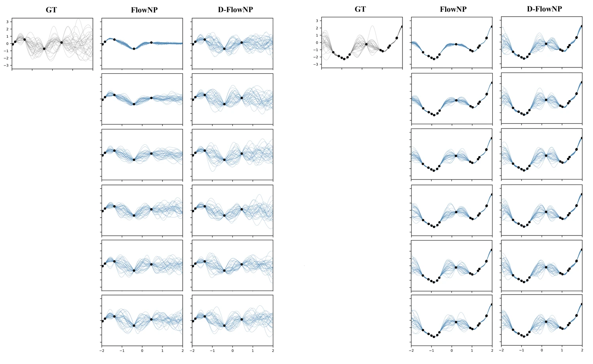
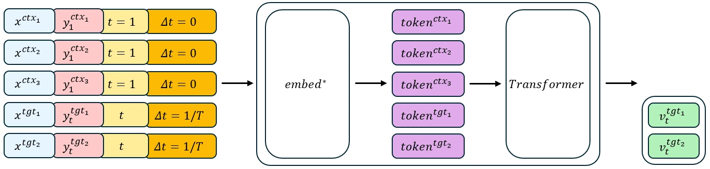
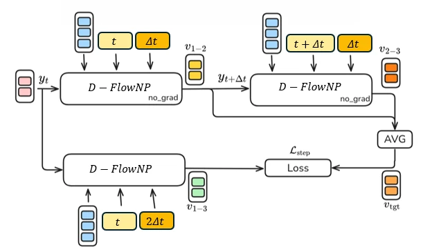
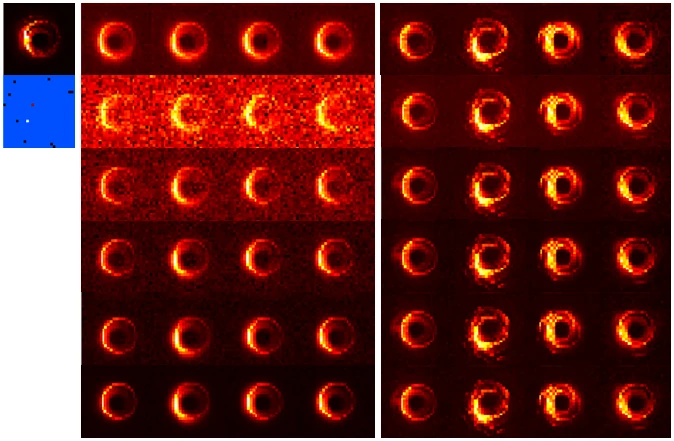
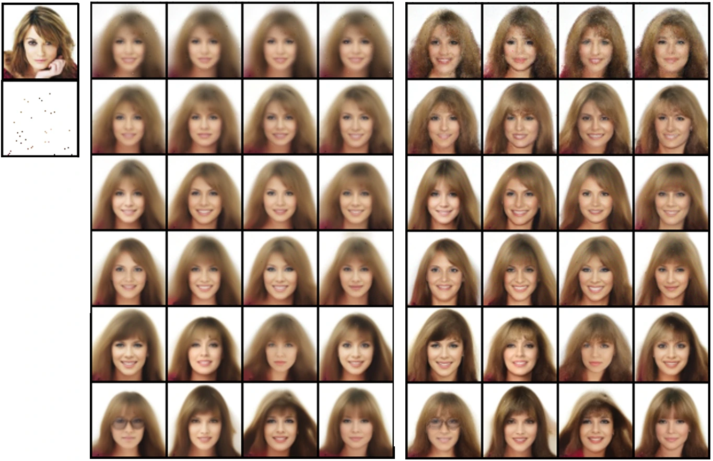
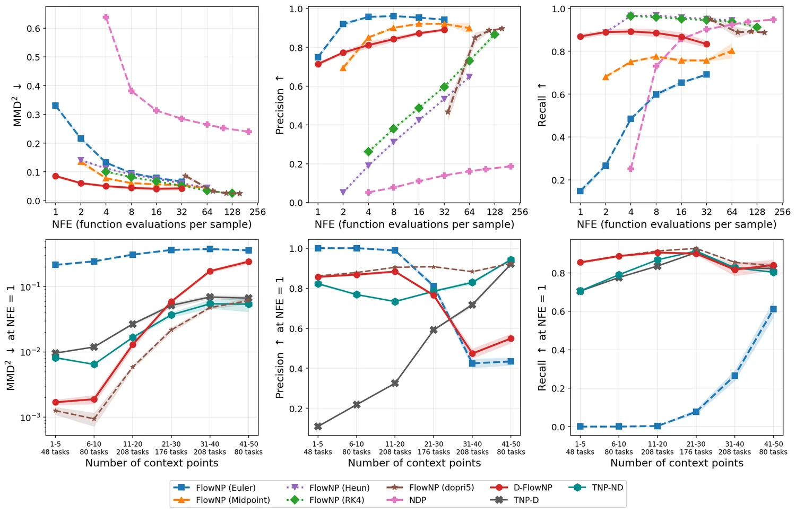

Direct Flow Neural ProcessesEfficient Sampling via Flow Step Amortization
Given a few observations, a Neural Process predicts a distribution over the missing values. Flow-based models can capture complex, coherent uncertainty, but generating a sample requires repeated network evaluations. D-FlowNP learns to take larger flow steps, producing conditional samples with as few as one evaluation.
Coherent samples with fewer steps
Both models receive the same context observations. At small sampling budgets, standard FlowNP can lose structure or diversity. D-FlowNP learns the coarse transitions needed to retain coherent samples at low budgets.

Learn the flow step itself
FlowNP transports noisy target values toward a conditional sample while keeping the observations fixed. D-FlowNP also conditions the network on the requested step size Δt, so it can predict transitions at different computational budgets.

During training, one coarse step is matched to two finer steps of the same model. This self-consistency objective is combined with flow matching, teaching the model to approximate a longer segment of the trajectory in a single evaluation.

Sparse observations, structured predictions
In simulated black-hole imaging and CelebA image completion, sparse observations leave much of the signal unknown. Multiple samples show the possible completions, and the comparison below exposes how their structure changes with the step budget.




For these Euler comparisons, each sampling step uses one network evaluation, so T equals the number of function evaluations (NFE).
Quality across sampling budgets
The low-budget advantage is visible in distributional metrics as well as individual samples. On 1D GP tasks, the comparison measures distributional agreement with MMD and sample quality and diversity with precision and recall.

BibTeX
@inproceedings{haider2026direct,
title = {Direct Flow Neural Processes: Efficient Sampling via Flow Step Amortization},
author = {Haider, Azmi A. and Rosenbaum, Dan},
booktitle = {SPIGM Workshop at ICML},
year = {2026},
url = {https://openreview.net/forum?id=7dkPGrmEMN}
}